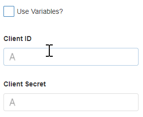

Autodesk Forge
Note
This Block has been deprecated and will be removed in a future version. Please update your Apps by implementing the Metablock as shown in the example provided.
The Autodesk Forge Block integrates Autodesk Forge into the page. Autodesk Forge is a platform that offers APIs that allow you to access engineering data and designs from the cloud. Some APIs allow you to embed 2D or 3D views of your design into a webpage. The Autodesk Construction Cloud platform (ACC) is another feature that allows the user to construct new engineering designs using web apps. For more details, visit the official Autodesk Forge website.

Autodesk Forge Properties
Appearance
Common Properties
The visibility property is common to most Blocks;
See the Common Properties article for more details on common appearance properties.
Settings
Warning
The user must have an account on AutoDesk Forge to be able to use this section.
Use Variables
This allows you to choose between manually entering a value for the Client ID and Client Secret or selecting from a static variable.

Client ID and Client Secret
This is the ID and Client Secret which can be found on the AutoDesk profile.
The Client ID and Client Secret properties are required for the Autodesk Forge Block.
API Location
Currently, there are only two options. US and EMEA which stands for Europe, Middle East, and Africa.
Bucket
Choose the container to store the model file.
Model File
This is the Autodesk file that will be rendered in the application.
Extension
An option to upload a JavaScript file so the user can interact with the model as shown in the model file.
Template:
class {Class Name} extends Autodesk.Viewing.Extension {
load() {
//script when extension is loaded
return true;
}
unload() {
//script when extension is unloaded
return true;
}
onDataLoaded(data){
//Apply data to Forge Model
}
onDataChanged(data, changes){
//Respond to live updates on the dataset by updating Forge Model
}
}
Autodesk.Viewing.theExtensionManager.registerExtension('{Extension Name}', {Class Name});
Data Source
Common Properties
Properties that are common to most Blocks include: filter, sort, show # of results, and skip # of results;
See the Common Properties article for more details on common Data Source properties.
Last modified: May 30, 2025